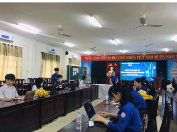

CUỘC THI THIẾT KẾ INFOGRAPHIC TUYÊN TRUYỂN NGHỊ QUYẾT ĐH ĐOÀN CÁC CẤP VÀ PHÒNG CHỐNG TỆ NẠN XÃ HỘI

Viết bởi Administrator Thứ ba, 28 Tháng 2 2023 18:08
CUỘC THI THIẾT KẾ INFOGRAPHIC TUYÊN TRUYỂN NGHỊ QUYẾT ĐH ĐOÀN CÁC CẤP VÀ PHÒNG CHỐNG TỆ NẠN XÃ HỘI
Chiều ngày 27/02/2023, Đoàn trường THPT chuyên Nguyễn Bỉnh Khiêm phối hợp cùng Đoàn phường Tân Thạnh tổ chức "Cuộc thi thiết kế infographic Tuyên truyền Nghị quyết Đại hội Đoàn và Phòng chống ma túy, bạo lực học đường". Cuộc thi đã nhận được rất nhiều tác phẩm với tác giả là các bạn Đoàn viên thanh niên trường THPT chuyên Nguyễn Bỉnh Khiêm.

Tất cả sản phẩm đều được các bạn Đoàn viên thanh niên thiết kế rất tỉ mỉ và trau chuốt. Đó là điều rất đáng trân trọng đối với sự cố gắng của Tuổi trẻ THPT chuyên Nguyễn Bỉnh Khiêm.
Một lần nữa, chúc mừng các bạn đã hoàn thành xuất sắc phần thi của mình. Bây giờ thì cùng nhìn ngắm lại một vài khoảnh khắc cuộc thi này nhé!
- 03/04/2023 22:53 - GIAO LƯU ĐOÀN TRƯỜNG THPT CHUYÊN NGUYỄN BỈNH KHIÊM…
- 01/04/2023 19:38 - DIỄN ĐÀN “XÂY DỰNG TÌNH BẠN ĐẸP – NÓI KHÔNG VỚI BẠ…
- 26/03/2023 17:56 - NGÀY ĐOÀN VIÊN NĂM 2023
- 25/03/2023 21:20 - Triển lãm tranh "Hoàng Sa, Trường Sa của Việt Nam …
- 08/03/2023 18:00 - TỔ CHỨC HỌC LỚP CẢM TÌNH ĐOÀN - THÁNG THANH NIÊN 2…
- 20/02/2023 20:23 - TIẾP LỬA NBK – ĐỊNH HƯỚNG NGHỀ NGHIỆP (20/02/2023)
- 16/02/2023 20:25 - TƯ VẤN CHỌN NGHỀ CHO TƯƠNG LAI (16/02/2023)
- 15/02/2023 19:22 - CÁC CLB THỂ THAO THAM GIA THI ĐẤU TẠI CÁC GIẢI THỂ…
- 20/01/2023 20:19 - CHIẾN DỊCH XUÂN TÌNH NGUYỆN NBK 2023
- 17/01/2023 23:25 - CUỘC THI TÌM KIẾM TÀI NĂNG ÂM NHẠC – NBK’STAR